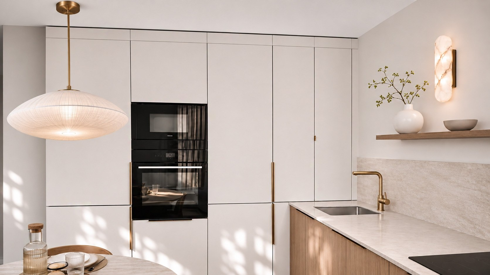
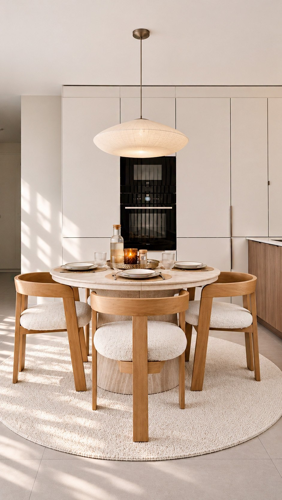

Conception de cuisine · Japandi · Résidentiel
A Study in Balance

Concept
Ce projet explore l’équilibre entre exigences fonctionnelles et simplicité visuelle.
Conçue dans le respect d’une configuration architecturale préexistante, la cuisine devait offrir une capacité de rangement généreuse tout en préservant une atmosphère ouverte et épurée.
L’approche a consisté à repenser l’organisation traditionnelle des éléments de cuisine afin de créer une composition plus légère, en harmonie avec l’architecture environnante.
Composition
L’identité visuelle de la cuisine repose sur un dialogue entre lignes verticales et horizontales.
Un ensemble de rangements toute hauteur offre une importante capacité de stockage. Réalisé dans une teinte neutre proche de celle des murs, il se fond visuellement dans l’architecture et atténue ainsi son volume.
À l’inverse, l’espace de préparation reste volontairement ouvert, sans meubles hauts traditionnels. Une étagère murale en bois, une hotte sculpturale et la ligne continue des meubles bas composent une forte horizontalité.
Ce jeu de volumes crée un équilibre visuel, permettant de concilier fonctionnalité et clarté architecturale.

Matières & Palette
La palette s’articule autour de tonalités neutres, douces et chaleureuses.
Les façades à finition bois apportent profondeur et chaleur visuelle aux meubles bas, tandis que les surfaces effet pierre introduisent une continuité visuelle et une certaine douceur dans l’espace de préparation.
Le choix d’une teinte ton sur ton pour les rangements toute hauteur crée un fond architectural discret, laissant s’exprimer les contrastes de finitions et les détails soigneusement sélectionnés.
L’étagère ouverte accueille quelques éléments décoratifs aux lignes sobres, avec des objets en céramique et de subtiles touches végétales qui viennent compléter la composition.



Atmosphère
Inspirée des principes du Japandi, cette cuisine associe simplicité des formes, palette maîtrisée et fonctionnalité.
Le résultat est un espace où une grande capacité de rangement ne se fait pas au détriment de la légèreté visuelle. Une composition épurée, définie par des proportions équilibrées, des contrastes de finitions et un dialogue subtil entre lignes horizontales et verticales.
Un espace fonctionnel pensé autour de la simplicité, de l’équilibre et d’une esthétique intemporelle.